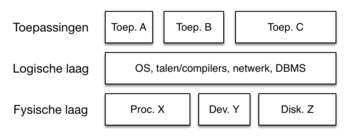

De Logische Laag
De logische laag bestaat bij de client uit het besturingssysteem. Maar vooral de browser is een belangrijk onderdeel van de logische laag. Dat klinkt misschien vreemd. Gezien vanuit een smartphone of laptop hoort de browser namelijk bij de toepassingenlaag: het is een app die je kunt installeren en die via het besturingssysteem communiceert met de hardware. Maar voor websites en -applicaties werkt de browser als een besturingssysteem: het is een omgeving waarin allerlei websites en webapplicaties kunnen worden uitgevoerd. De browser zorgt er ook voor dat die websites en -applicaties goed zichtbaar zijn voor de gebruiker. Daarvoor voert de browser programmacode uit die van de server afkomstig is. Door het uitvoeren van die code verschijnt de applicatie op je scherm – de toepassingenlaag. Een webapplicatie draait dus helemaal in de browser en communiceert via de browser met de server.
